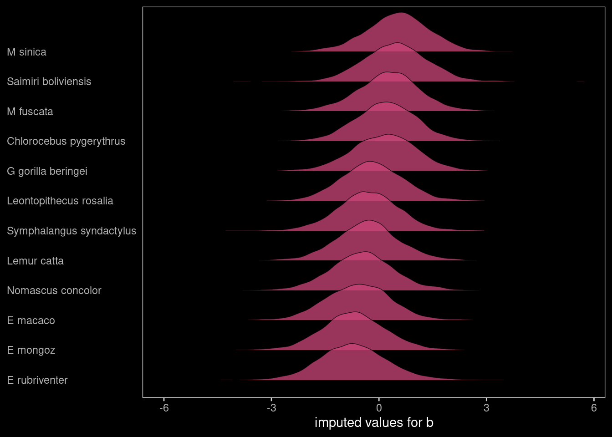
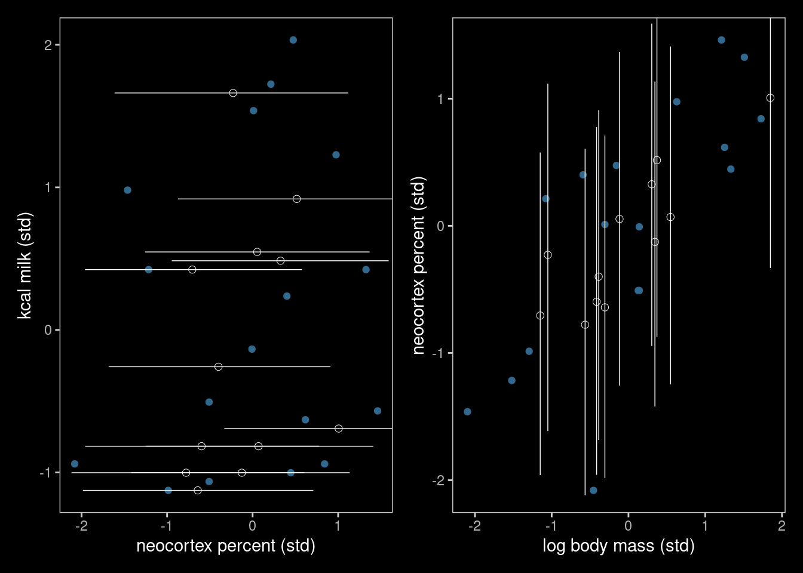
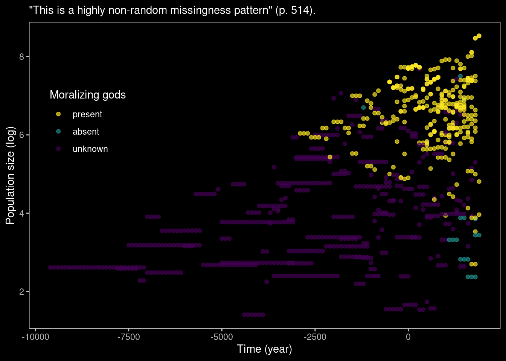
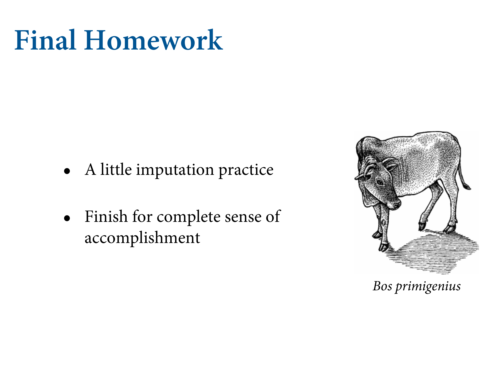

14.2 Missing data
![Grown up measurement error. Mechanically similar but feels really different. You want to do something about missing data. Most of the standard regression tools will autoamtically remove missing cases. So all the variables are removed. This squanders information, but can also create confounds. There are ways to deal with this. So how to deal with it? Worst appraoch is to replace teh missing values with the mean of the column. Really bad idea because they model will intepret it as if you knew the value. Procedure called multiple imputation, whcih works really well. Frequentist way of doing what we're going to do. Unreasoanbly effective. Basically do the modle multiple times on samples on some stochastic model of the dataset. We're just going to go full-flavour Bayesian.](slides/L20/29.png)
Grown up measurement error. Mechanically similar but feels really different. You want to do something about missing data. Most of the standard regression tools will autoamtically remove missing cases. So all the variables are removed. This squanders information, but can also create confounds. There are ways to deal with this. So how to deal with it? Worst appraoch is to replace teh missing values with the mean of the column. Really bad idea because they model will intepret it as if you knew the value. Procedure called multiple imputation, whcih works really well. Frequentist way of doing what we’re going to do. Unreasoanbly effective. Basically do the modle multiple times on samples on some stochastic model of the dataset. We’re just going to go full-flavour Bayesian.
15.2.2. Imputing primates

Let’s talk about DAGs again. Deeply confusing, because the terminology is awful. Let’s think about the primate milk data again. Interested in understanding why the energy content of milk varies so much. Is is related to the proportion of brain neocortex. U is the strong postive correlation between M and B, but we don’t know what it is. Something going on here but we don’t know what it is.

This taxonomy tells us what to do. Confusingly, MCAR is totally different to MAR.
MCAR. We’re not going to get to see B, because it has missing values in it. Lot’s of primates where they didn’t measure percent neocortex. To get the gaps, we know it’s partly caused by B, but it’s also caused by the missingness process R. R_B creates missing values in B.

We’re going to condition on B_obs. Are there backdoors? The answer is no, but there are two paths. Direct and indirect. But the total causal effect can be estimated by simple regression with just B_obs. There’s an indirect effect through M. But there’s no back door.
There’s no path that takes you through R_B. This means the missingness mechanism is ignorable, because it doesn’t create any backdoor confound. So you don’t need to know it. This is the benign case.

You don’t have to condition on anything to keep your inference about K independent from the missingness mechanism.

The only way this could happen is if you had a random number generator deletes values from your dataset. I assert this is highly implausible in most research situations.

This is something else that could be going on. This will give us MAR. M is now entering/influencing R_B. Now the missingness mechanism depends on the body mass values. Large or small body masses are more likely to have missing body mass values. Different species are more or less attractive to study. That generates a pattern where some features are associated causally with the missingness.
As before, is there a backdoor path. Now because there’s an arrow entering R_B..

You have a complete path. How to close the backdoor? Condition on M. Here you don’t have to know the missingness mechanism, but do need to do imputation.
There’s some variable in the graph we can condition on, and separate the two. This is a nice situation to be in, and probably the most common. Why need to impute? Because you’d be polluting the other variables with this missngness pattern, whcihc an create really strong biases.
Worst case. In this case, the most obvious way to get it is the variable itself causes the missingness. Certain values of neoxortex percent are more likely to go missing. How? Maybe species with low neocortex weren’t measured.
This is nasty because you get a backdoor you can’t close. Your only hope is to model the missingness mechanism and thereby condition on it.

The other way to get it would be to have a missingness variable. Here there’s fork, like phylogeny. We like to study animals closer to us. That will influence neocortex percent, and also influence missingness.


Imagine a DAG iwth four variables. R is nowD, a dog. In the first, the dog will eat any homework. In the middle, teh dog eats particular students’ homework. The attribute could be attention span, as in they turn away and the dog eats it. Finally, the dog only eats bad homework. Or, more liekly, the stuent feeds it to the dog. But it depends ont he score ofthe homework.

Let’s go through the mechanics of this.
data(milk, package = "rethinking")
d <- milk
rm(milk)
# transform
d <-
d %>%
mutate(neocortex.prop = neocortex.perc / 100,
logmass = log(mass)) %>%
mutate(k = (kcal.per.g - mean(kcal.per.g)) / sd(kcal.per.g),
b = (neocortex.prop - mean(neocortex.prop, na.rm = T)) / sd(neocortex.prop, na.rm = T),
m = (logmass - mean(logmass)) / sd(logmass))We’re missing 12 values from neocortex.prop:
d %>%
count(is.na(neocortex.prop))## is.na(neocortex.prop) n
## 1 FALSE 17
## 2 TRUE 12We’ll replace the NAs with a parameter, and get posterior distributions for each of the missing values.

Now they get assigned a parameter. They’ll be imputed by the modeo.
B is now a vector in which some values are observed, and toehrs are paratmets. We’ll stick them in an ordianry regression modeo. But now we have a prior. When B is observed, it infomrs the parameters in side it. Those will be estimated from teh observed values.


Looks exavtly the same, but we add this prior. ulam automates this.
When writing a multivariate model in brms, I find it easier to save the model code by itself and then insert it into the brm() function. Otherwise, things start to feel cluttered.
b_model <-
# here's the primary `k` model
bf(k ~ 1 + mi(b) + m) +
# here's the model for the missing `b` data
bf(b | mi() ~ 1) +
# here we set the residual correlations for the two models to zero
set_rescor(FALSE)Get a sense of how to specify the priors:
get_prior(data = d,
family = gaussian,
b_model)## prior class coef group resp dpar nlpar bound
## (flat) b
## (flat) Intercept
## student_t(3, 0.2, 2.5) Intercept b
## student_t(3, 0, 2.5) sigma b
## (flat) b k
## (flat) b m k
## (flat) b mib k
## student_t(3, -0.3, 2.5) Intercept k
## student_t(3, 0, 2.5) sigma k
## source
## default
## default
## default
## default
## (vectorized)
## (vectorized)
## (vectorized)
## default
## defaultWith the one-step Bayesian imputation procedure in brms, you might need to use the resp argument when specifying non-default priors. Now fit the model.
b15.5 <-
brm(data = d,
family = gaussian,
b_model, # here we insert the model
prior = c(prior(normal(0, 0.5), class = Intercept, resp = k),
prior(normal(0, 0.5), class = Intercept, resp = b),
prior(normal(0, 0.5), class = b, resp = k),
prior(exponential(1), class = sigma, resp = k),
prior(exponential(1), class = sigma, resp = b)),
iter = 2000, warmup = 1000, chains = 4, cores = 4,
seed = 15,
file = "fits/b15.05")print() only gives us part of the picture:
print(b15.5)## Family: MV(gaussian, gaussian)
## Links: mu = identity; sigma = identity
## mu = identity; sigma = identity
## Formula: k ~ 1 + mi(b) + m
## b | mi() ~ 1
## Data: d (Number of observations: 29)
## Samples: 4 chains, each with iter = 2000; warmup = 1000; thin = 1;
## total post-warmup samples = 4000
##
## Population-Level Effects:
## Estimate Est.Error l-95% CI u-95% CI Rhat Bulk_ESS Tail_ESS
## k_Intercept 0.03 0.16 -0.31 0.33 1.00 3841 3213
## b_Intercept -0.05 0.21 -0.46 0.37 1.00 3503 2561
## k_m -0.55 0.21 -0.93 -0.13 1.00 1846 2497
## k_mib 0.50 0.24 -0.00 0.94 1.00 1553 2294
##
## Family Specific Parameters:
## Estimate Est.Error l-95% CI u-95% CI Rhat Bulk_ESS Tail_ESS
## sigma_k 0.84 0.15 0.60 1.16 1.00 1951 2629
## sigma_b 1.01 0.17 0.74 1.43 1.00 2185 2374
##
## Samples were drawn using sampling(NUTS). For each parameter, Bulk_ESS
## and Tail_ESS are effective sample size measures, and Rhat is the potential
## scale reduction factor on split chains (at convergence, Rhat = 1).You can see 12 imputes. What does this do to the slopes in the model?
Get a summary of the imputed values:
posterior_summary(b15.5) %>%
round(digits = 2)## Estimate Est.Error Q2.5 Q97.5
## b_k_Intercept 0.03 0.16 -0.31 0.33
## b_b_Intercept -0.05 0.21 -0.46 0.37
## b_k_m -0.55 0.21 -0.93 -0.13
## bsp_k_mib 0.50 0.24 0.00 0.94
## sigma_k 0.84 0.15 0.60 1.16
## sigma_b 1.01 0.17 0.74 1.43
## Ymi_b[2] -0.57 0.93 -2.37 1.28
## Ymi_b[3] -0.69 0.92 -2.48 1.15
## Ymi_b[4] -0.70 0.95 -2.52 1.29
## Ymi_b[5] -0.31 0.91 -2.08 1.55
## Ymi_b[9] 0.47 0.91 -1.26 2.20
## Ymi_b[14] -0.18 0.88 -1.86 1.57
## Ymi_b[15] 0.20 0.87 -1.53 1.92
## Ymi_b[17] 0.27 0.89 -1.55 2.05
## Ymi_b[19] 0.53 0.90 -1.33 2.23
## Ymi_b[21] -0.46 0.91 -2.24 1.44
## Ymi_b[23] -0.30 0.88 -2.05 1.41
## Ymi_b[26] 0.15 0.92 -1.67 1.93
## lp__ -81.18 4.00 -90.23 -74.73Plot to get a sense of what we’ve done:
posterior_samples(b15.5) %>%
dplyr::select(starts_with("Ymi_b")) %>%
set_names(filter(d, is.na(b)) %>% pull(species)) %>%
pivot_longer(everything(),
names_to = "species") %>%
ggplot(aes(x = value,
y = reorder(species, value))) +
stat_slab(fill = viridis_pal(option = "C")(7)[4],
alpha = 3/4, height = 1.5, slab_color = "black", slab_size = 1/4) +
labs(x = "imputed values for b",
y = NULL) +
theme(axis.text.y = element_text(hjust = 0),
axis.ticks.y = element_blank())
b15.6 <-
brm(data = d,
family = gaussian,
k ~ 1 + b + m,
prior = c(prior(normal(0, 0.5), class = Intercept),
prior(normal(0, 0.5), class = b),
prior(exponential(1), class = sigma)),
iter = 2000, warmup = 1000, chains = 4, cores = 4,
seed = 15,
file = "fits/b15.06")Let’s compare the same model. Now we can compare the slopes. Two predictors assocaited with the outcome variable in opposite directions. NOtice that the esimates have got more precise. They’ve also moved closer to the mean.
# wrangle
bind_rows(fixef(b15.5) %>% data.frame() %>% rownames_to_column("term"),
fixef(b15.6) %>% data.frame() %>% rownames_to_column("term")) %>%
slice(c(4:3, 6:7)) %>%
mutate(term = str_c("beta[", c(1:2, 1:2), "]"),
fit = rep(c("b15.5", "b15.6"), each = n() / 2)) %>%
# plot!
ggplot(aes(x = Estimate, y = fit)) +
geom_vline(xintercept = 0, linetype = 3, alpha = 1/2) +
geom_pointrange(aes(xmin = Q2.5, xmax = Q97.5)) +
labs(x = "marginal posterior",
y = NULL) +
theme(axis.ticks.y = element_blank(),
strip.background = element_rect(color = "transparent", fill = "transparent")) +
facet_wrap(~ term, labeller = label_parsed, ncol = 1)
We can plot the values up, but they’ll have standard errors on them. Open circles is imputed. Posterior means follow the regression line.
The disappointing thing about this midel is that the relationship between the imputed values adn the predictor is 0, which is wrong. THat’s because we dodn’t tell it they’re assocaited.
d <-
d %>%
mutate(row = 1:n()) %>%
left_join(
posterior_summary(b15.5) %>%
data.frame() %>%
rownames_to_column("term") %>%
filter(str_detect(term, "Ymi")) %>%
mutate(row = str_extract(term, "(\\d)+") %>% as.integer()),
by = "row"
)
d %>%
dplyr::select(species, k:Q97.5) %>%
glimpse()## Rows: 29
## Columns: 10
## $ species <fct> Eulemur fulvus, E macaco, E mongoz, E rubriventer, Lemur cat…
## $ k <dbl> -0.9400408, -0.8161263, -1.1259125, -1.0019980, -0.2585112, …
## $ b <dbl> -2.080196025, NA, NA, NA, NA, -0.508641289, -0.508641289, 0.…
## $ m <dbl> -0.4558357, -0.4150024, -0.3071581, -0.5650254, -0.3874772, …
## $ row <int> 1, 2, 3, 4, 5, 6, 7, 8, 9, 10, 11, 12, 13, 14, 15, 16, 17, 1…
## $ term <chr> NA, "Ymi_b[2]", "Ymi_b[3]", "Ymi_b[4]", "Ymi_b[5]", NA, NA, …
## $ Estimate <dbl> NA, -0.5749477, -0.6944976, -0.6971893, -0.3109926, NA, NA, …
## $ Est.Error <dbl> NA, 0.9324091, 0.9228088, 0.9491488, 0.9071429, NA, NA, NA, …
## $ Q2.5 <dbl> NA, -2.368005, -2.483320, -2.519301, -2.078711, NA, NA, NA, …
## $ Q97.5 <dbl> NA, 1.277546, 1.151146, 1.289826, 1.545820, NA, NA, NA, 2.20…color <- viridis_pal(option = "D")(7)[4]
# left
p1 <-
d %>%
ggplot(aes(y = k)) +
geom_point(aes(x = b),
color = color) +
geom_pointrange(aes(x = Estimate, xmin = Q2.5, xmax = Q97.5),
shape = 1, size = 1/4, fatten = 8, stroke = 1/4) +
labs(x = "neocortex percent (std)",
y = "kcal milk (std)") +
coord_cartesian(xlim = range(d$b, na.rm = T))
# right
p2 <-
d %>%
ggplot(aes(x = m)) +
geom_point(aes(y = b),
color = color) +
geom_pointrange(aes(y = Estimate, ymin = Q2.5, ymax = Q97.5),
shape = 1, size = 1/4, fatten = 8, stroke = 1/4) +
labs(x = "log body mass (std)",
y = "neocortex percent (std)") +
coord_cartesian(ylim = range(d$b, na.rm = T))
# combine and plot!
p1 + p2## Warning: Removed 12 rows containing missing values (geom_point).## Warning: Removed 17 rows containing missing values (geom_pointrange).## Warning: Removed 12 rows containing missing values (geom_point).## Warning: Removed 17 rows containing missing values (geom_pointrange).

We fix this by making it a MVNormal.

Need to manually construct it.
b_model <-
mvbf(bf(k ~ 1 + mi(b) + m),
bf(b | mi() ~ 1 + m),
rescor = FALSE)
b15.7 <-
brm(data = d,
family = gaussian,
b_model,
prior = c(prior(normal(0, 0.5), class = Intercept, resp = k),
prior(normal(0, 0.5), class = Intercept, resp = b),
prior(normal(0, 0.5), class = b, resp = k),
prior(normal(0, 0.5), class = b, resp = b),
prior(exponential(1), class = sigma, resp = k),
prior(exponential(1), class = sigma, resp = b)),
iter = 2000, warmup = 1000, chains = 4, cores = 4,
seed = 15,
file = "fits/b15.07")

Then happy days, you get even more precision.
Figure 15.6
d <-
d %>%
dplyr::select(-(term:Q97.5)) %>%
left_join(
posterior_summary(b15.7) %>%
data.frame() %>%
rownames_to_column("term") %>%
filter(str_detect(term, "Ymi")) %>%
mutate(row = str_extract(term, "(\\d)+") %>% as.integer()),
by = "row"
)
d %>%
dplyr::select(species, k:Q97.5) %>%
glimpse()## Rows: 29
## Columns: 10
## $ species <fct> Eulemur fulvus, E macaco, E mongoz, E rubriventer, Lemur cat…
## $ k <dbl> -0.9400408, -0.8161263, -1.1259125, -1.0019980, -0.2585112, …
## $ b <dbl> -2.080196025, NA, NA, NA, NA, -0.508641289, -0.508641289, 0.…
## $ m <dbl> -0.4558357, -0.4150024, -0.3071581, -0.5650254, -0.3874772, …
## $ row <int> 1, 2, 3, 4, 5, 6, 7, 8, 9, 10, 11, 12, 13, 14, 15, 16, 17, 1…
## $ term <chr> NA, "Ymi_b[2]", "Ymi_b[3]", "Ymi_b[4]", "Ymi_b[5]", NA, NA, …
## $ Estimate <dbl> NA, -0.59675787, -0.64115105, -0.77746004, -0.39920411, NA, …
## $ Est.Error <dbl> NA, 0.6844536, 0.6769265, 0.6791844, 0.6573925, NA, NA, NA, …
## $ Q2.5 <dbl> NA, -1.9581199, -1.9841119, -2.1180278, -1.6832233, NA, NA, …
## $ Q97.5 <dbl> NA, 0.7762222, 0.7100079, 0.6052781, 0.9105329, NA, NA, NA, …color <- viridis_pal(option = "D")(7)[3]
p1 <-
d %>%
ggplot(aes(y = k)) +
geom_point(aes(x = b),
color = color) +
geom_pointrange(aes(x = Estimate, xmin = Q2.5, xmax = Q97.5),
shape = 1, size = 1/4, fatten = 8, stroke = 1/4) +
labs(x = "neocortex percent (std)",
y = "kcal milk (std)") +
coord_cartesian(xlim = range(d$b, na.rm = T))
p2 <-
d %>%
ggplot(aes(x = m)) +
geom_point(aes(y = b),
color = color) +
geom_pointrange(aes(y = Estimate, ymin = Q2.5, ymax = Q97.5),
shape = 1, size = 1/4, fatten = 8, stroke = 1/4) +
labs(x = "log body mass (std)",
y = "neocortex percent (std)") +
coord_cartesian(ylim = range(d$b, na.rm = T))
p1 + p2## Warning: Removed 12 rows containing missing values (geom_point).## Warning: Removed 17 rows containing missing values (geom_pointrange).## Warning: Removed 12 rows containing missing values (geom_point).## Warning: Removed 17 rows containing missing values (geom_pointrange).
15.2.3. Where is your god now?
Sometimes there are no statistical solutions to scientific problems. But even then, careful statistical thinking can be useful because it will tell us that there is no statistical solution.
Some of the most successful religious traditions involve gods (and other supernatural entities) that enforce moral norms. For example, in the Abrahamic traditions, God punishes the wicked and rewards the just. Such gods might be called “moralizing gods.” In other traditions, gods behave in their own self-interest, with no interest in encouraging humans to cooperate with one another. Does such a difference in belief have any consequences for the society?
data(Moralizing_gods, package = "rethinking")
d <- Moralizing_gods
rm(Moralizing_gods)glimpse(d)## Rows: 864
## Columns: 5
## $ polity <fct> Big Island Hawaii, Big Island Hawaii, Big Island Hawai…
## $ year <int> 1000, 1100, 1200, 1300, 1400, 1500, 1600, 1700, 1800, …
## $ population <dbl> 3.729643, 3.729643, 3.598340, 4.026240, 4.311767, 4.20…
## $ moralizing_gods <int> NA, NA, NA, NA, NA, NA, NA, NA, 1, NA, NA, NA, NA, NA,…
## $ writing <int> 0, 0, 0, 0, 0, 0, 0, 0, 0, 0, 0, 0, 0, 0, 0, 0, 0, 0, …Get a sense of how the values are distributed (Figure 15.7):
d %>%
mutate(mg = factor(ifelse(is.na(moralizing_gods), 2, 1 - moralizing_gods),
levels = 0:2,
labels = c("present", "absent", "unknown"))) %>%
ggplot(aes(x = year, y = population, color = mg)) +
geom_point(alpha = 2/3) +
scale_color_manual("Moralizing gods",
values = viridis_pal(option = "D")(7)[c(7, 4, 1)]) +
labs(subtitle = '"This is a highly non-random missingness pattern" (p. 514).',
x = "Time (year)",
y = "Population size (log)") +
theme(legend.position = c(.125, .67))
d %>%
mutate(gods = moralizing_gods,
literacy = writing) %>%
count(gods, literacy) %>%
mutate(`%` = 100 * n / sum(n))## gods literacy n %
## 1 0 0 16 1.8518519
## 2 0 1 1 0.1157407
## 3 1 0 9 1.0416667
## 4 1 1 310 35.8796296
## 5 NA 0 442 51.1574074
## 6 NA 1 86 9.9537037
This is a really big topic. One ofthe areas that is most important is with occupancy. Really missing data problems. There’s a true occupancy but 0s are not trustworthy. They ahve a special preocess that comes from the detection process that you model.
